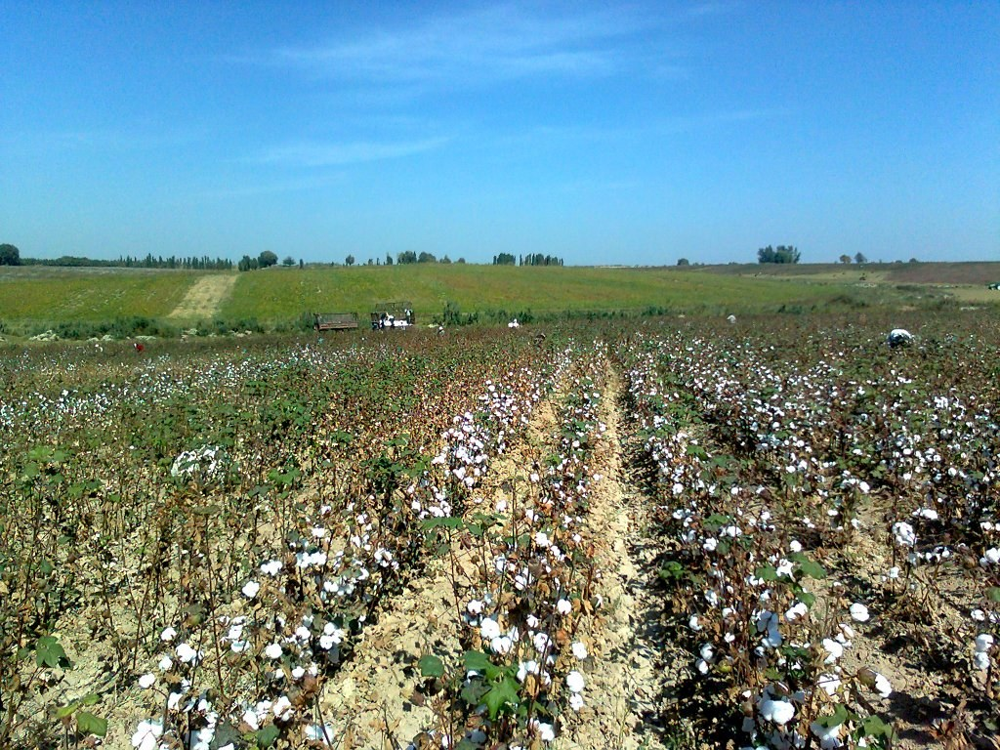

Uzbekistan has picked 3.4 mln tons of cotton — 76% of the plan
As of 12 October, about 75% of the harvest was done by machines. Last season, the labour inspectorate recovered 1.785 bln soums in unpaid wages for cotton pickers.

Uzbekistan's cotton harvest has peaked: as of 12 October the country had picked 3.4 mln tons of raw cotton — 76% of the annual contract target of 4.5 mln tons.
How the harvest is gathered
About 75% of the cotton picked — 2.6 mln tons — was gathered by high-capacity harvesters. Only 848,000 tons were picked by hand: 174,000 tons from field edges and 674,000 tons from small plots. Around 3,000 high-capacity harvesters are at work, more than 1,000 of them leased. On 12 October alone, machines picked 147,000 tons in a single day.
The country is mechanising the harvest step by step. By 2025 more than 50% of the crop was machine-picked, and the government aims to raise that share to 70% in 2026. Shifting to machines is the main way to end the long-standing practice of forced labour.

Working conditions under watch
Oversight of pickers' pay and working conditions has been strengthened for the 2026 season. From 25 September to 31 October, 65 specialists carry out unannounced inspections at randomly selected farms, setting out each Monday and Saturday on GPS coordinates to check employment contracts, wages and conditions. Ahead of the harvest, the International Labour Organization held training for inspectors in Tashkent on 24–26 August.
Last season the State Labour Inspectorate visited 986 farms and fined 116 officials a total of 397.44 mln soums for non-payment of wages. As a result, 1.785 bln soums in unpaid wages was recovered for pickers. In 166 cases 8,752 pickers had their pay delayed; in 227 cases 9,075 people worked without contracts.
“Our inspectors worked with the heads of the farms to resolve the issue, and the arrears were fully repaid,” said Bakhtiyor Makhmadaliev, Deputy Chairman of the Federation of Trade Unions.
Why it matters
Cotton remains one of the pillars of Uzbekistan's economy, and the country ranks fifth in the world for cotton-fibre production. Mechanising the harvest and monitoring labour are part of the drive to move away from forced labour and rebuild trust in international markets.